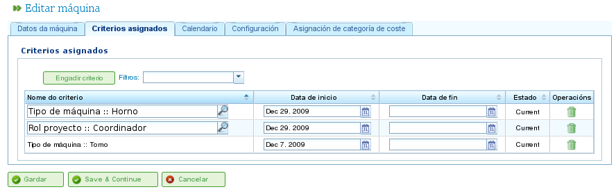

Ressourcenverwaltung
Contents
Das Programm verwaltet zwei verschiedene Arten von Ressourcen: Personal und Maschinen.
Personalressourcen
Personalressourcen repräsentieren die Mitarbeiter des Unternehmens. Ihre wichtigsten Merkmale sind:
- Sie erfüllen ein oder mehrere generische oder mitarbeiterspezifische Kriterien.
- Sie können einer Aufgabe spezifisch zugewiesen werden.
- Sie können einer Aufgabe, die ein Ressourcenkriterium erfordert, generisch zugewiesen werden.
- Sie können nach Bedarf einen Standard- oder spezifischen Kalender haben.
Maschinenressourcen
Maschinenressourcen repräsentieren die Maschinen des Unternehmens. Ihre wichtigsten Merkmale sind:
- Sie erfüllen ein oder mehrere generische oder maschinenspezifische Kriterien.
- Sie können einer Aufgabe spezifisch zugewiesen werden.
- Sie können einer Aufgabe, die ein Maschinenkriterium erfordert, generisch zugewiesen werden.
- Sie können nach Bedarf einen Standard- oder spezifischen Kalender haben.
- Das Programm enthält einen Konfigurationsbildschirm, auf dem ein Alpha-Wert definiert werden kann, um das Maschinen-/Mitarbeiterverhältnis darzustellen.
- Der Alpha-Wert gibt die Menge an Mitarbeiterzeit an, die für den Betrieb der Maschine erforderlich ist. Zum Beispiel bedeutet ein Alpha-Wert von 0,5, dass jede 8 Stunden Maschinenbetrieb 4 Stunden Mitarbeiterzeit erfordert.
- Benutzer können einem Mitarbeiter spezifisch einen Alpha-Wert zuweisen und diesen Mitarbeiter für diesen Prozentsatz der Zeit für den Maschinenbetrieb designieren.
- Benutzer können auch eine generische Zuweisung basierend auf einem Kriterium vornehmen, sodass allen Ressourcen, die dieses Kriterium erfüllen und verfügbare Zeit haben, ein Nutzungsprozentsatz zugewiesen wird.
Ressourcen verwalten
Benutzer können Mitarbeiter und Maschinen im Unternehmen erstellen, bearbeiten und deaktivieren (aber nicht dauerhaft löschen), indem sie zum Bereich „Ressourcen" navigieren. Dieser Bereich bietet die folgenden Funktionen:
- Liste der Mitarbeiter: Zeigt eine nummerierte Liste von Mitarbeitern an, mit der Benutzer deren Details verwalten können.
- Liste der Maschinen: Zeigt eine nummerierte Liste von Maschinen an, mit der Benutzer deren Details verwalten können.
Mitarbeiter verwalten
Die Mitarbeiterverwaltung erfolgt, indem Sie zum Bereich „Ressourcen" gehen und dann „Liste der Mitarbeiter" auswählen. Benutzer können jeden Mitarbeiter in der Liste bearbeiten, indem sie auf das Standard-Bearbeitungssymbol klicken.
Beim Bearbeiten eines Mitarbeiters können Benutzer auf die folgenden Registerkarten zugreifen:
Mitarbeiterdaten: Diese Registerkarte ermöglicht es Benutzern, die grundlegenden Identifikationsdaten des Mitarbeiters zu bearbeiten:
- Vorname
- Nachname(n)
- Nationale Ausweisdokumentnummer (DNI)
- Warteschlangenbasierte Ressource (siehe Abschnitt zu warteschlangenbasierten Ressourcen)

Persönliche Daten von Mitarbeitern bearbeiten
Kriterien: Diese Registerkarte wird verwendet, um die Kriterien zu konfigurieren, die ein Mitarbeiter erfüllt. Benutzer können alle Mitarbeiter- oder generischen Kriterien zuweisen, die sie für angemessen halten. Es ist entscheidend, dass Mitarbeiter Kriterien erfüllen, um die Funktionalität des Programms zu maximieren. So weisen Sie Kriterien zu:
- Klicken Sie auf die Schaltfläche „Kriterien hinzufügen".
- Suchen Sie nach dem hinzuzufügenden Kriterium und wählen Sie das am besten geeignete aus.
- Klicken Sie auf die Schaltfläche „Hinzufügen".
- Wählen Sie das Startdatum aus, ab dem das Kriterium gilt.
- Wählen Sie das Enddatum für die Anwendung des Kriteriums auf die Ressource aus. Dieses Datum ist optional, wenn das Kriterium als unbefristet gilt.

Kriterien mit Mitarbeitern verknüpfen
Kalender: Diese Registerkarte ermöglicht es Benutzern, einen spezifischen Kalender für den Mitarbeiter zu konfigurieren. Allen Mitarbeitern ist ein Standardkalender zugewiesen; es ist jedoch möglich, jedem Mitarbeiter basierend auf einem vorhandenen Kalender einen spezifischen Kalender zuzuweisen.

Kalender-Registerkarte für eine Ressource
Kostenkategorie: Diese Registerkarte ermöglicht es Benutzern, die Kostenkategorie zu konfigurieren, die ein Mitarbeiter während eines bestimmten Zeitraums erfüllt. Diese Informationen werden verwendet, um die mit einem Mitarbeiter in einem Projekt verbundenen Kosten zu berechnen.

Kostenkategorie-Registerkarte für eine Ressource
Die Ressourcenzuweisung wird im Abschnitt „Ressourcenzuweisung" erläutert.
Maschinen verwalten
Maschinen werden für alle Zwecke als Ressourcen behandelt. Ähnlich wie Mitarbeiter können Maschinen daher verwaltet und Aufgaben zugewiesen werden. Die Ressourcenzuweisung wird im Abschnitt „Ressourcenzuweisung" behandelt, der die spezifischen Merkmale von Maschinen erläutern wird.
Maschinen werden über den Menüeintrag „Ressourcen" verwaltet. Dieser Bereich enthält eine Operation namens „Maschinenliste", die die Maschinen des Unternehmens anzeigt. Benutzer können eine Maschine aus dieser Liste bearbeiten oder löschen.
Beim Bearbeiten von Maschinen zeigt das System eine Reihe von Registerkarten zur Verwaltung verschiedener Details an:
Maschinendetails: Diese Registerkarte ermöglicht es Benutzern, die Identifikationsdetails der Maschine zu bearbeiten:
- Name
- Maschinencode
- Beschreibung der Maschine

Maschinendetails bearbeiten
Kriterien: Wie bei Mitarbeiterressourcen wird diese Registerkarte verwendet, um Kriterien hinzuzufügen, die die Maschine erfüllt. Maschinen können zwei Arten von Kriterien zugewiesen werden: maschinenspezifische oder generische. Mitarbeiterkriterien können Maschinen nicht zugewiesen werden. So weisen Sie Kriterien zu:
- Klicken Sie auf die Schaltfläche „Kriterien hinzufügen".
- Suchen Sie nach dem hinzuzufügenden Kriterium und wählen Sie das am besten geeignete aus.
- Wählen Sie das Startdatum aus, ab dem das Kriterium gilt.
- Wählen Sie das Enddatum für die Anwendung des Kriteriums auf die Ressource aus.
- Klicken Sie auf die Schaltfläche „Speichern und fortfahren".

Kriterien Maschinen zuweisen
Kalender: Diese Registerkarte ermöglicht es Benutzern, einen spezifischen Kalender für die Maschine zu konfigurieren.

Kalender Maschinen zuweisen
Maschinenkonfiguration: Diese Registerkarte ermöglicht es Benutzern, das Verhältnis von Maschinen zu Mitarbeiterressourcen zu konfigurieren. Eine Maschine hat einen Alpha-Wert, der das Maschinen-/Mitarbeiterverhältnis angibt. Die Zuordnung eines Mitarbeiters zu einer Maschine kann auf zwei Arten erfolgen:
- Spezifische Zuweisung: Weisen Sie einen Datumsbereich zu, in dem der Mitarbeiter der Maschine zugewiesen ist.
- Generische Zuweisung: Weisen Sie Kriterien zu, die von den der Maschine zugewiesenen Mitarbeitern erfüllt werden müssen.

Konfiguration von Maschinen
Kostenkategorie: Diese Registerkarte ermöglicht es Benutzern, die Kostenkategorie zu konfigurieren, die eine Maschine während eines bestimmten Zeitraums erfüllt.

Kostenkategorien Maschinen zuweisen
Virtuelle Mitarbeitergruppen
Das Programm ermöglicht es Benutzern, virtuelle Mitarbeitergruppen zu erstellen, die keine echten Mitarbeiter sind, sondern simuliertes Personal. Diese Gruppen ermöglichen es Benutzern, erhöhte Produktionskapazität zu bestimmten Zeiten basierend auf den Kalendereinstellungen zu modellieren.
Die Registerkarten zum Erstellen virtueller Mitarbeitergruppen sind dieselben wie für die Konfiguration von Mitarbeitern:
- Allgemeine Details
- Zugewiesene Kriterien
- Kalender
- Zugeordnete Stunden
Der Unterschied zwischen virtuellen Mitarbeitergruppen und tatsächlichen Mitarbeitern besteht darin, dass virtuelle Mitarbeitergruppen einen Namen für die Gruppe und eine Menge haben, die die Anzahl der tatsächlichen Personen in der Gruppe darstellt.

Virtuelle Ressourcen
Warteschlangenbasierte Ressourcen
Warteschlangenbasierte Ressourcen sind eine spezifische Art von Produktivelement, das entweder nicht zugewiesen sein oder 100 % Engagement haben kann. Mit anderen Worten, sie können nicht mehr als eine Aufgabe gleichzeitig geplant haben und können auch nicht überbelastet werden.
Für jede warteschlangenbasierte Ressource wird automatisch eine Warteschlange erstellt. Die für diese Ressourcen geplanten Aufgaben können mit den bereitgestellten Zuweisungsmethoden spezifisch verwaltet werden.